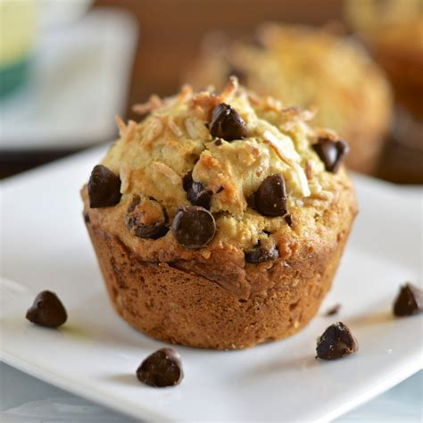

Banana Chocolate Chip Muffins

Description
Delicious muffin recipe created by my own grandmother
Prep Time: 30 min
Bake Time: 25 min
Makes: 2 dozen
- 2 1/2 cups flour
- 1 tsp baking powder
- 1/2 tsp baking soda
- 1/2 tsp salt
- 1 1/3 cups mashed ripe bananas (about 3 bananas)
- 1 cup butter/margarine
- 1 1/4 cups sugar
- 1 egg
- 1 cup semi-sweet chocolate pieces
- Preheat oven to 350 degrees. Grease muffin cups/pan
- Stir together flour, baking powder, baking soda, and salt in small bowl and reserve
- Beat together butter and sugar in large bown until
(you are) light and fluffy. Beat in egg.
Mix in banana mixture. Stir in flour mixture
until (you are) well blended. Fold in
chocolate chips. Divide evenly into muffin cups.
- Bake at 350 degrees for 25 minutes until
wooden toothpick comes out clean. Remove muffins from cups
and cool (them, not you) on wire rack.